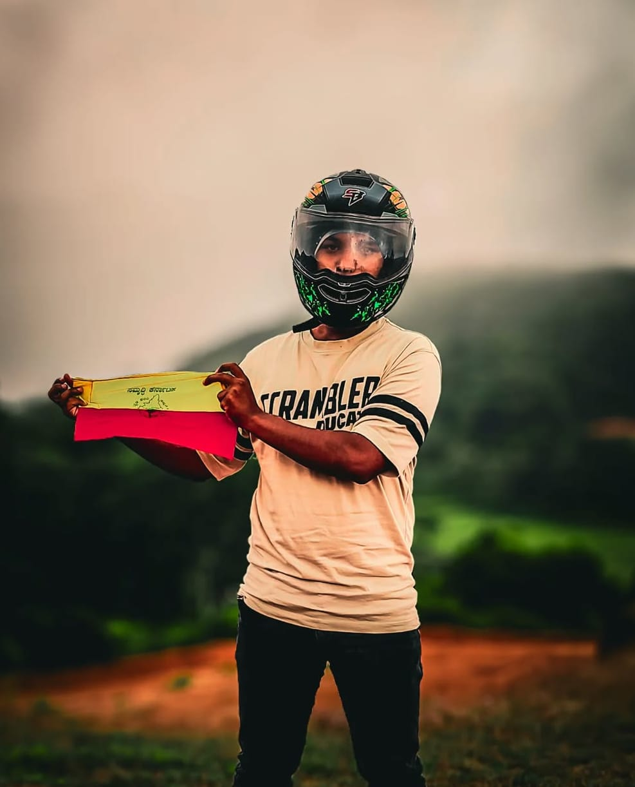

👤 About Sanath Sanchaari

Hello! I'm Sanath, a passionate traveler and photographer based in Karnataka. **Sanchaari** means 'traveler' in Kannada, and this website is my personal journal and guide dedicated to exploring the breathtaking landscapes, hidden trails, and vibrant culture of my home state.
My mission is to share detailed, reliable information, especially focusing on local gems, safety advice for solo and family travelers, and sustainable tourism practices. Join me in discovering the majesty of the Western Ghats, the history of Hampi, and the serenity of our coastlines!
Photography Gear:
Vivo v20 with DreamNeo Bike